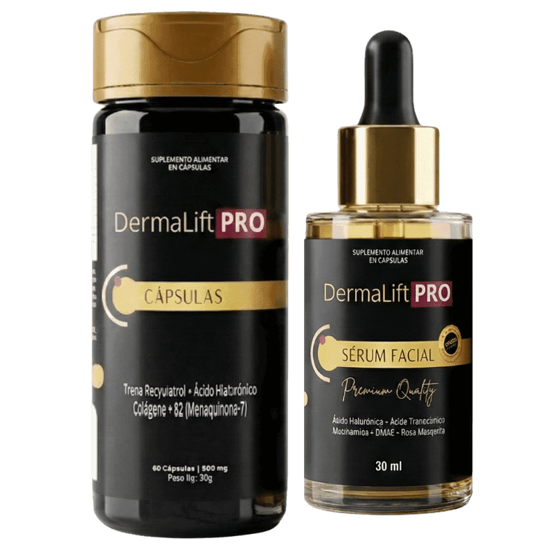

01 / DE DENTROCápsulas
Cápsulas
DermaLift PRO
Uma opção de suplementação para complementar a rotina diária.
CÁPSULAS + SÉRUM FACIAL
Dois momentos de cuidado.
Uma rotina mais completa.
Conheça a dupla DermaLift PRO: suplementação para complementar o dia a dia e sérum facial para o seu skincare.
CONHECER OS KITS ▶ Ver a apresentação de 2 minutos
DUAS FORMAS DE CUIDADO.
A MESMA ROTINA.
POR QUE CÁPSULAS + SÉRUM?
Não são dois produtos com a mesma função.
São duas formas de cuidado que você reúne na mesma rotina.
Uma opção de suplementação para complementar a rotina diária.
Cuidado tópico aplicado à pele, integrado ao seu momento de skincare.
A conexão é a rotina: um suplemento e um cosmético, cada um com seu papel e suas orientações de uso.
ENTENDA ANTES DE ESCOLHER
O que é a dupla, quais ingredientes fazem parte da composição e como os produtos entram no dia a dia.
Já conheço. Quero ver os kits ↗Cápsulas e sérum em dois momentos da mesma rotina.
Formas de uso distintas, com instruções próprias.
Conheça os ingredientes antes de escolher seu kit.
CÁPSULAS DERMALIFT PRO
Trans-resveratrol, ácido hialurônico, colágeno hidrolisado e menaquinona-7 (vitamina K2) reunidos em cápsulas.
Confira a dose e as restrições no rótulo. Não substitui uma alimentação equilibrada.
SÉRUM FACIAL DERMALIFT PRO
Ácido hialurônico, niacinamida e rosa mosqueta estão entre os ingredientes do sérum. Um cuidado aplicado à pele que complementa a proposta da dupla.
Utilize conforme as orientações da embalagem e respeite as necessidades da sua pele.
CONHEÇA A COMPOSIÇÃO
Entenda o que cada ingrediente é.
Uma escolha informada começa pela composição.
Composto de origem vegetal estudado por sua atividade antioxidante. Integra a composição do suplemento.
Conhecido pela capacidade de reter água. No uso tópico, é valorizado em fórmulas de hidratação. As formas de uso são distintas.
Colágeno dividido em fragmentos menores. É um ingrediente da composição; sua presença não equivale a uma garantia de firmeza da pele.
Menaquinona-7 é uma forma da vitamina K, envolvida em funções como coagulação e metabolismo ósseo. Compõe a parte nutricional da rotina.
Forma da vitamina B3 utilizada no skincare. É conhecida pelo uso em formulações voltadas ao cuidado da barreira e da aparência da pele.
Ingrediente de origem vegetal. Seu óleo contém ácidos graxos e é utilizado em cosméticos para contribuir com a sensação de maciez.
As informações apresentam características gerais dos ingredientes. Os efeitos dependem da concentração, formulação, uso e características individuais. Consulte a composição e as orientações completas nos rótulos.
COMO USAR A DUPLA
Siga as orientações de uso e as restrições do rótulo.
Aplique conforme as instruções da embalagem.
Incorpore cada produto ao dia a dia, respeitando suas orientações.
Dúvidas sobre o uso no seu caso? Procure orientação profissional.
ESCOLHA SUA ROTINA
Encontre a opção que combina com a rotina que você deseja manter.
Para conhecer a rotina.
Para dar continuidade ao cuidado.
Para uma rotina prolongada.
Cada kit inclui as quantidades descritas acima. As imagens ilustram os tipos de produto; confira as condições finais no checkout.
COMPRA COM MAIS CLAREZA
Você será direcionada ao checkout da Braip para revisar o preço, o frete, as opções de pagamento e os dados do pedido antes de concluir a compra.
ANTES DE COMPRAR
Se sua dúvida não está aqui, fale com o atendimento.
Conversar pelo WhatsApp ↗É uma proposta de cuidado que reúne cápsulas e sérum facial. As cápsulas são um suplemento; o sérum é um cosmético de uso tópico. Cada produto tem uma forma de uso própria.
As cápsulas complementam a rotina diária por via oral. O sérum é aplicado à pele no momento de skincare. São duas formas de cuidado, não dois produtos com a mesma função.
Siga as orientações e restrições do rótulo da embalagem recebida. Para avaliar o uso no seu caso, especialmente se usa medicamentos ou tem uma condição de saúde, procure orientação profissional.
Aplique conforme a quantidade, frequência e demais instruções da embalagem. Em caso de dúvidas sobre a combinação com outros cosméticos, procure orientação profissional.
As cápsulas incluem trans-resveratrol, ácido hialurônico, colágeno hidrolisado e menaquinona-7 (vitamina K2). O sérum inclui ácido hialurônico, niacinamida e rosa mosqueta. Consulte os rótulos para a composição completa.
Kit de 1 mês: 1 frasco de cápsulas + 1 sérum facial. Kit de 3 meses: 3 frascos de cápsulas + 1 sérum facial. Kit de 6 meses: 6 frascos de cápsulas + 3 séruns faciais. A duração de cada produto depende das orientações de uso.
Consulte o prazo e o frete apresentados para seu endereço no checkout antes de concluir a compra. As condições de entrega variam conforme o destino e a oferta.
As opções disponíveis e o valor final aparecem no checkout da Braip. Confira eventuais juros e o total da compra antes de confirmar o pagamento.
Verifique as condições vigentes de garantia e devolução na oferta, no checkout ou com o atendimento. O atendimento pode esclarecer as regras aplicáveis ao seu pedido.
Use os dados de acompanhamento enviados na confirmação da compra. Se não recebeu o código ou precisa de ajuda, entre em contato com o atendimento.
Sim. Clique aqui para conversar pelo WhatsApp e esclarecer suas dúvidas sobre os kits e o pedido.
CÁPSULAS + SÉRUM FACIAL
Conheça os kits DermaLift PRO e escolha a rotina que faz sentido para você.
VER KITS E CONDIÇÕES